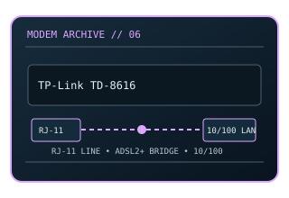

[ MODEL-SPECIFIC NETWORK HARDWARE ]
TP-Link TD-8616 ADSL2+ Ethernet Modem
ADSL2+ bridge modem with an RJ-11 subscriber-line input and Fast Ethernet host port. This static record documents the modem-side line technology separately from its host interface and provider-dependent service rate.

MODEL IDENTIFICATION: Match the exact model number and hardware revision on the device label. Similar names, regional SKUs and provider-branded variants may have different ports, firmware, modulation or driver support.
Exact specifications and compatibility
| Cataloged model | TP-Link TD-8616 ADSL2+ Ethernet Modem |
|---|---|
| Dedicated subcategory | Modems and line-termination devices |
| Modulation / line protocol | ADSL2+ (ITU-T G.992.5), with backward-compatible ADSL modes; RJ-11 copper telephone pair; DMT-based ADSL, ADSL2 and ADSL2+ line modes (Annex/profile negotiated with the DSLAM). |
| Line / physical interfaces | RJ-11 copper telephone pair; DMT-based ADSL, ADSL2 and ADSL2+ line modes (Annex/profile negotiated with the DSLAM). |
| Nominal data rate | Up to 24 Mb/s downstream for ADSL2+ and up to approximately 1 Mb/s upstream in common Annex A profiles; attainable rate depends on loop length, noise and provisioning. |
| Bus / host interface | RJ-11 DSL input; 1 × 10/100BASE-T RJ-45 Ethernet connection to a host or router. |
| Operating-system compatibility | Ethernet bridge requires no dedicated modem driver and can be used by any OS with Ethernet/IP and the required PPPoE client or router. Web setup uses a browser; provider parameters still apply. |
| Driver / firmware notes | A bridge modem does not provide Wi-Fi or switching. Check whether the ISP still supports ADSL2+ and whether its line uses a compatible Annex. |
| Wi-Fi / switching | No Wi-Fi access point or Ethernet switching function is cataloged for this modem. |
Model-specific notes
A bridge modem does not provide Wi-Fi or switching. Check whether the ISP still supports ADSL2+ and whether its line uses a compatible Annex. Nominal signaling rates are standards/model ceilings rather than specimen test results or a promise of ISP throughput.
Manufacturer, archive and standards references
- Internet Archive catalog copy of the TD-8616 manualArchived model-specific guide or software documentation for identification and legacy host details.
- TP-Link TD-8616 support/download pageManufacturer source; confirm regional SKU, revision and present support status.
- ITU-T Recommendation G.992.5 — ADSL2+Standards reference for the relevant line/modem signaling family; implementation and ISP profile remain model-specific.
Check manufacturer and provider support for the exact region, revision, line profile, firmware and host OS before deployment.